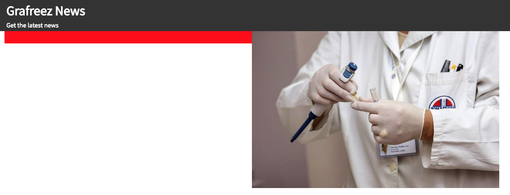
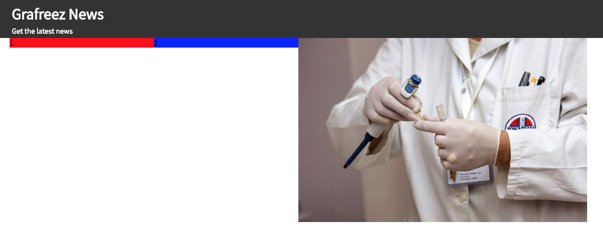
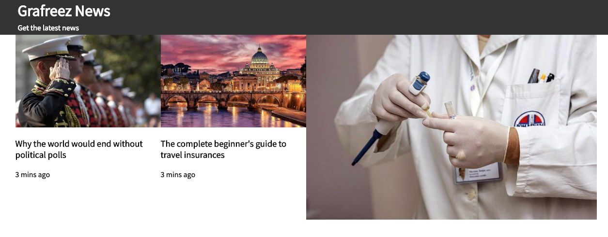
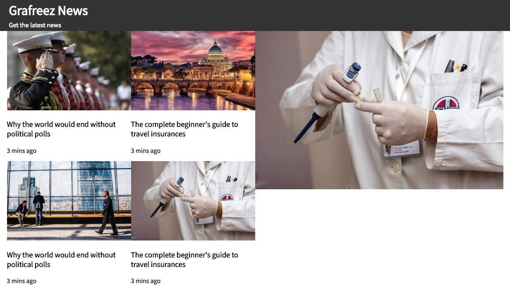

Step 1:
Create a new html page titled 'news.html', and your stylesheet 'style.css'. You will need to use 'Source Sans Pro' font from Google.
Step 2:
- Start with the page header i.e. Grafreez News and the tagline. Choose appropriate tags.
- Add some css to set the header background color to #333333
Your page should look like this now
Step 3:
- We will create the outer most blocks to include the main content
- Add a 'row' div and set its 'display: flex' i.e. we are creating the 'flex container'
- Add 2 'col' inside the container that are equal spaced i.e. their 'flex' property set to 1
- Set the background colors for the boxes to red and blue so you see how they look
Your page should look like this now
If it does not look like this, you didn't setup the 'flex' correctly. Review files from last class, ask your neighbor or Avi
- Take out the blue background color to the right 'col' and include the 'health' image which in the images folder using 'img' tag.
- The image sizes are off, add the following CSS so the images become responsive
img { width: 100%; height: auto; }
Your page should look like this now
 Your CSS file should look something like this
.row {
display: flex;
}
.col {
flex: 1;
}
img.responsive {
width: 100%;
height: auto;
}
Step 4:
Let's work on the 2x2 image grid that will go in the 'col' that is 'red' background
- Steps to get 2x2 grid is very similar to what we did in Step 3. Can you try before reading below?
- Create a 'row' div and add 2 'col' divs inside it. Set their background colors so you can see how they look
Your page should look like this now
- Add the images to the newly created 'col' boxes. Add the caption and time stamp as well.
Your page should look like this now
- Repeat the previous step to create a new 2x2 grid and add the remaining 2 news items
Your page should look like this now
Step 5:
- You are almost done...look closely at the news-template.png. There is some border and space between the new items.
- The border color can be #cccccc. I'll let you figure this part out.